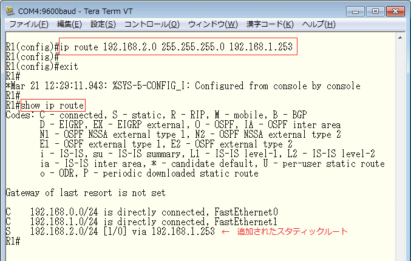
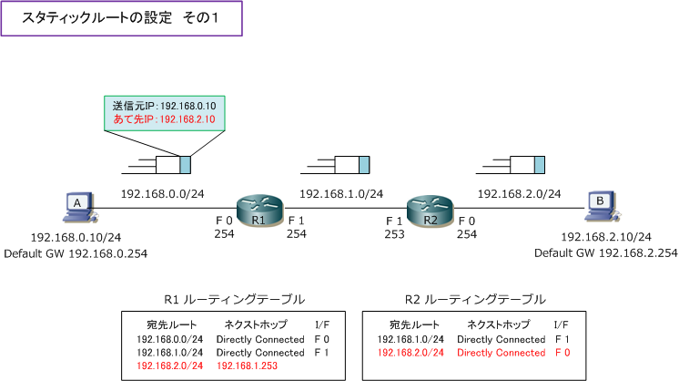
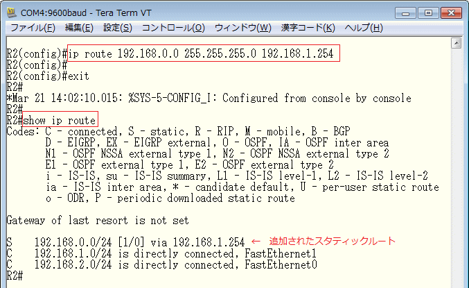
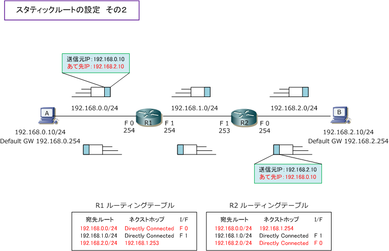
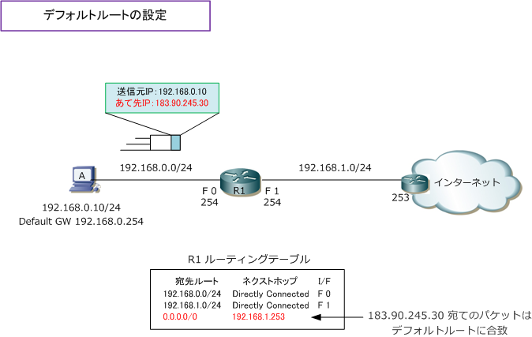
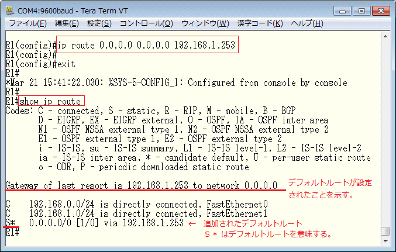

Static Routing
スタティックルーティングとは
スタティックルートとは、管理者が宛先ネットワークへの最適なルートを手動で設定したルートのことです。 スタティックルートの情報は他のルータへ通知されることはありません。また、ネットワークの状態に変化 があった場合でも、他に有効な宛先ルートがあっても、自動的にそのルートに切り替わることはありません。 ルータでこのスタティックルートを使用したルーティングのことを、スタティックルーティングと言います。
スタティックルートの設定
下図は、それぞれのルータのI/FにIPアドレスの設定と有効化（no shutdown）をしている状態となります。 この時点でルータは直接接続ルートを追加することになるので、ルーティングテーブルは下図のとおりです。 この状態ではルーティングテーブルどおり端末AからBにパケットを送信しても届きません。なぜなら、R1の ルーティングテーブルには、宛先IPアドレス「192.168.2.10」に該当する宛先ルートが存在しないからです。

そこでR1にスタティックルートの設定をしてみます。Cisco機器ではスタティックルートを設定するためには グローバルコンフィグレーションモードでip routeコマンドを使用します。引数は以下となります。現時点で 初心者のネットワークエンジニアは、引数の distance と permanent については理解していなくてもOKです。
スタティックルートの設定
(config) # ip route network mask ip-address | interface [ distance ] [ permanent ]
| ip route コマンドの引数 | 説明 |
|---|---|
| network | 宛先ネットワークのアドレスを指定する。 |
| mask | 宛先ネットワークに対するサブネットマスクを指定する。 |
| ip-address or interface | ネクストホップアドレス、または出力インターフェースを指定する。出力インターフェースを 指定する場合は、Serial などのポイントツーポイントのインターフェースであることが条件。 |
| distance | アドミニストレーティブディスタンス値（AD）を変更したい場合に数値を指定する。(オプション) |
| permanent | 宛先ルートへの出力インターフェースがダウンした場合でも、設定したスタティックルートが ルーティングテーブルから削除されないようにしたい時にpermanentと指定する。(オプション) |
R1は「192.168.2.0/24」の宛先ルートを学習する必要があるので、以下のスタティックルートを設定します。

上での設定により下図の通り端末AからBへパケットが届くようになります。しかし端末Aからのパケットが Bへ送信できたとしても、端末BからAへ送信できないことがR2のルーティングテーブルを見れば分かります。 R2のルーティングテーブルには端末Aのアドレスに該当する 192.168.0.0/24 の宛先ルートが存在しません。

従って、端末A ⇔ B間で相互に通信できるようにするためには、R2に以下のスタティックルートが必要です。

R2でもスタティックルートを設定することで、端末A⇔B間で双方向に通信できるようになります。

このようにスタティックルートは双方向に設定する必要あります。パケットを送信できたとしても返りの スタティックルートがなければ、受信したパケットを送り返すことができません。これとても重要です。
コンピュータ間の通信は双方向に通信してはじめて成立するので、片側だけのパケットが送信できても 意味がないのです。このようにスタティックルートを設定する場合、双方向に通信できるか確認します。
デフォルトルートの設定
スタティックルートでは、通信したい宛先ネットワークごとにスタティックルートを1行ずつ設定していく 必要があります。しかし、通信したい宛先ネットワークが膨大な場合、設定していくのが非常に手間です。 そのような場合はデフォルトルートという特別なルートを設定します。デフォルトルートは「0.0.0.0/0」 で全てのネットワークを示して、受信したパケットの宛先ネットワークアドレスがルーティングテーブルに 登録されていない場合でも指定したネクストホップアドレスにパケット転送するる便利で特別なルートです。
デフォルトルートはインターネットに接続する企業ネットワークのルータで役立ちます。例えば下図では https://www.infraexpert.com/をブラウザで開いた時のパケットですが、このグローバルIPアドレスで あっても、デフォルトルートを設定すれば「0.0.0.0/0」に合致しネクストホップアドレス 192.168.1.253 に転送されます。インターネット上の通信したいグローバルIPアドレスを1行ずつ設定する必要はないです。

デフォルトのルートの設定はスタティックルート同様に ip route コマンドを使用します。設定コマンド 引数なども全て同じ内容ですが、宛先アドレスには必ず「0.0.0.0 0.0.0.0」と指定する必要があります。
